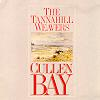

Celtic Lyrics Corner > Artists & Groups > Tannahill Weavers > Cullen Bay
|  |
Cullen Bay
(1990) |
| Tracks : |
1.
The Standard On The Braes O' Mar/The Haughs O' Cromdale
2. The Fiddler/The Fiddler's Jig/Jenny Dang The Weaver/The Reel Of Tulloch 3. Joy Of My Heart 4. Aikendrum 5. Samuel The Weaver/The Panda/Thunderhead/The Cannongate Twitch/Allan MacDonald's Reel 6. Kintail (Theid Mi Dhachaidh Chró Chinn t-Sáile) 7. A Night Visitor's Song 8. Cullen Bay/Dalnahassaig/S'Ionadh Riud A Chunnaic Mi/Alick C. MacGregor 9. Braw Burn The Bridges |